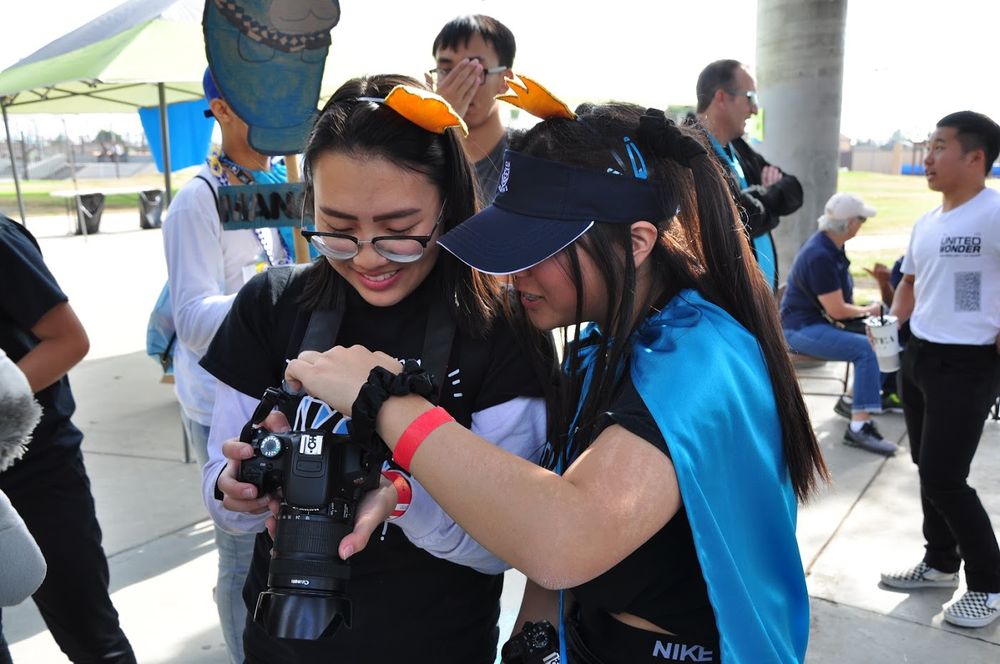

Madelyn Moua
I’m Madelyn Moua but mostly known as Madee. I am a current student attending University of California, Riverside studying art. My concentration is graphic design in hopes of landing a job in business marketing and advertising using graphics and communications.
Despite being an art major with a concentration of graphic design, I dabble in other mediums of art as well. For my hobbies, I paint (mostly using watercolor), play instruments (I play guitar, ukulele and violin) and I’m also into photography/cinematography. Painting was a small hobby I picked up in my free time just to pass time. It later evolved to painting what I saw day to day, I would sit and relax with good music and just paint for hours or if I didn’t have the time I would take pictures on my phone to use as later reference. For instruments I was forced to learn the violin by my parents in middle school and that became the foundation for my love for music. I learned how to read notes and understand tempo all self taught. As for ukulele, I picked up through the internet via YouTube tutorials and just began practicing often and getting the hang of chords and songs. Lastly for guitar I did the same as for ukulele and now practice this instrument the most out of all of them and apply it to my spiritual life. I serve as a worship leader for my home church and play guitar. For photography and videography, I was inspired by my older sister and essentially took her camera when she was no longer using it and began taking photos and learning how to shoot manually on my own. I became accustomed to tweaking the settings to my own preference and this later helped me with photoshoots. When shooting and editing, I learned how to use Adobe Lightroom and Premiere Pro to edit and finalize projects.
Graphic design seemed to be the perfect mix of all my hobbies (excluding music). I’m able to combine all my creative energy whether it be a painting, photo or video and use that as a basis to my graphics. I first gained knowledge of designing my junior and senior year of high school when I was part of a club board as a winter committee member and historian, who was in charge of informative graphics, photos of volunteer events and monthly recap videos. However my senior year is when I truly gained graphic design information. I took a course as an elective and I instantly fell in love with the freedom and variety I was offered in class. There I learned how to navigate through Adobe Photoshop and Illustrator. I learned the various uses and tools of each program and how to produce the outcomes I had envisioned in my head. I took another course over the summer on my own time and there I further learned how to work my way through photoshop as well as a little in Final Cut Pro and a couple music programs. Other techniques I know and learn are self-taught or YouTube taught. I watch videos on how to achieve a certain look or glow to a graphic and deepen my ability within the program.
As far as work experience goes, I have yet to find a paying job concerning graphic designing. However, I hope to find some jobs or internships this coming year in order to gain some experience just to have under my belt. I have yet to see how graphic design truly impacts advertising, marketing, a company and day to day work life.
Experience
Staff Photographer
• Wrote and took pictures for articles
• Designed the school paper
• Experience with Photoshop, Word and Wordpress
Winter Committee Member
• Responsible for providing club graphics
• Used Photoshop and Canva
Club Historian
• Responsible for providing photos of club/volunteer events
• Responsible for monthly recap videos of events
• Communications to publicist and recording secretary
• Experience with Adobe Photoshop, Premiere Pro and Lightroom
Education
Fountain Valley High School
University of California Riverside
Portfolio
